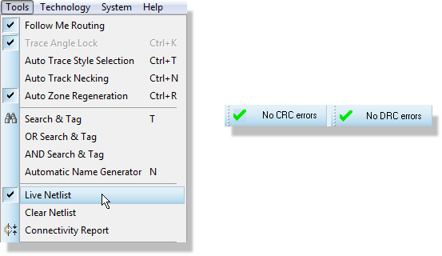
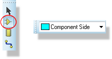
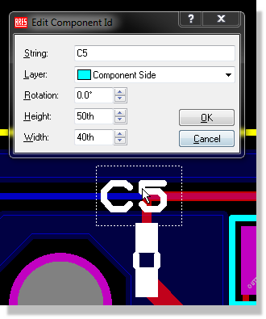
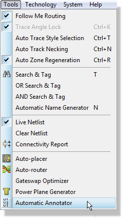

In some circumstances you may wish to renumber components on the PCB to suit manufacturing or assembly activities. This can be done either manually or automatically.
To re-annotate manually
Ensure that the PCB is synched with the schematic and then make sure that live netlisting is swiched on.



You can re-annotate manually with live netlisting switched off but each annotation will involve a netlist change which in turn will require you to manually unlock the layout. Much easier to perform this type of operation with live netlisting enabled.
Be careful that you do not end up with two components with the same reference (e.g. two R2 components). Proteus will cope with this and will warn you in the pre-production checker but it almost always leads to confusion.
Automatic re-annotation will globally re-annotate the PCB and reflect the changes back to the schematic. You can select both a direction and a starting point for the annotator.
To re-annotate automatically
Make sure that the layout is synched with the schematic module and then launch the automatic annotator from the tools menu in the layout module.

The annotator starts by scanning along the direction you specify from your starting point. It takes a 'strip' of footprints from one side of the board to the other and the width of the strip is the 'thickest' footprint outline. This strip is annotated in the direction you specified and another strip is then scanned using the same metric.
What this means is that while generally you will get good results it is quite possible to see what appears to be illogical annotation. An example would be where a big IC footprint is mostly but not completely in the same strip as a row of small resistors. In this case the annotation of the resistor outside of the strip may be markedly different from the other ones.
You can easily resolve this kind of thing by manually re-annotating any oddities.
The PCB annotator will annotate the physical layout without consideration of the logical schematic. The annotation in the schematic will change automatically to match the new layout annotation but rules for annotation defined in the schematic will be ignored by the PCB annotator unless you check the box to preserve sheet annotation bases on hierarchical designs.
Depending on the user, the logical annotation of sheets may be preferred over the geometric annotation on the board. If this is true for you, it may be easier to sort your annotation using the Global Annotator from the Tools menu in the schematic module.